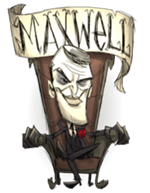
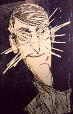
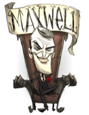
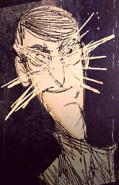

 
 
| This article is a disambiguation page for similarly named articles "Maxwell". If an internal link led you here, you may change it to point directly to the intended article. |
Maxwell may refer to:
Maxwell however can be spawned in by using console command ("waxwell") instead of ("maxwell")
Using the command ("maxwell") will spawn in the Maxwell seen at the start of your world.
Using the code ("waxwell") will spawn the character version of Maxwell.